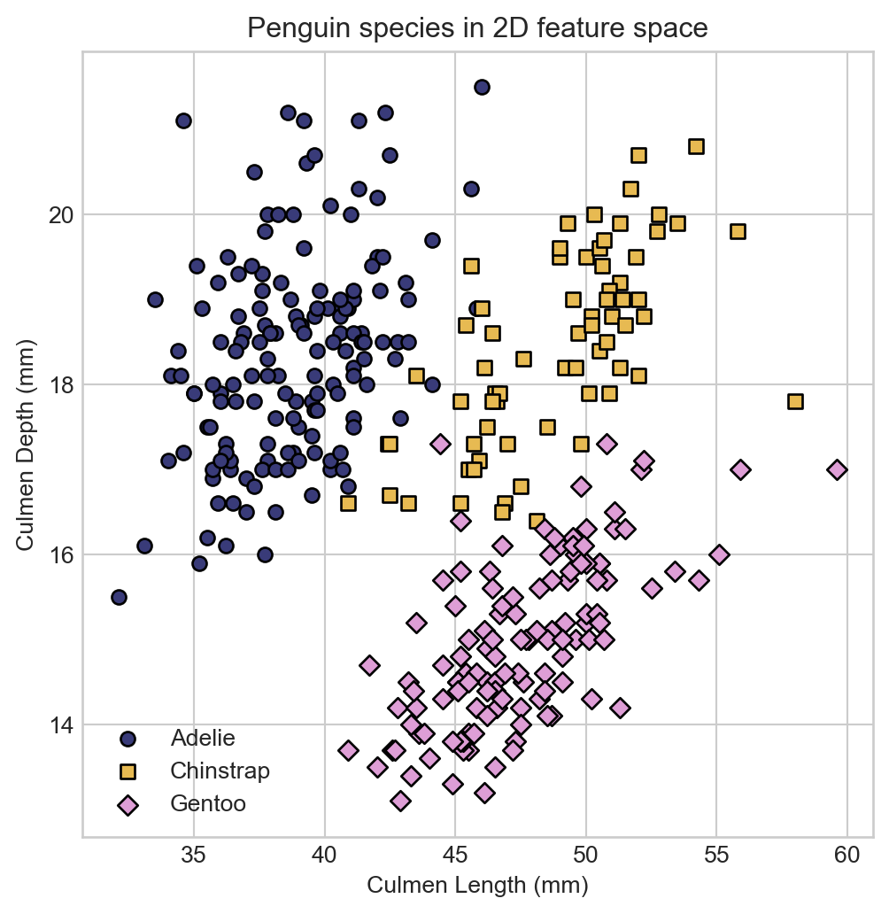
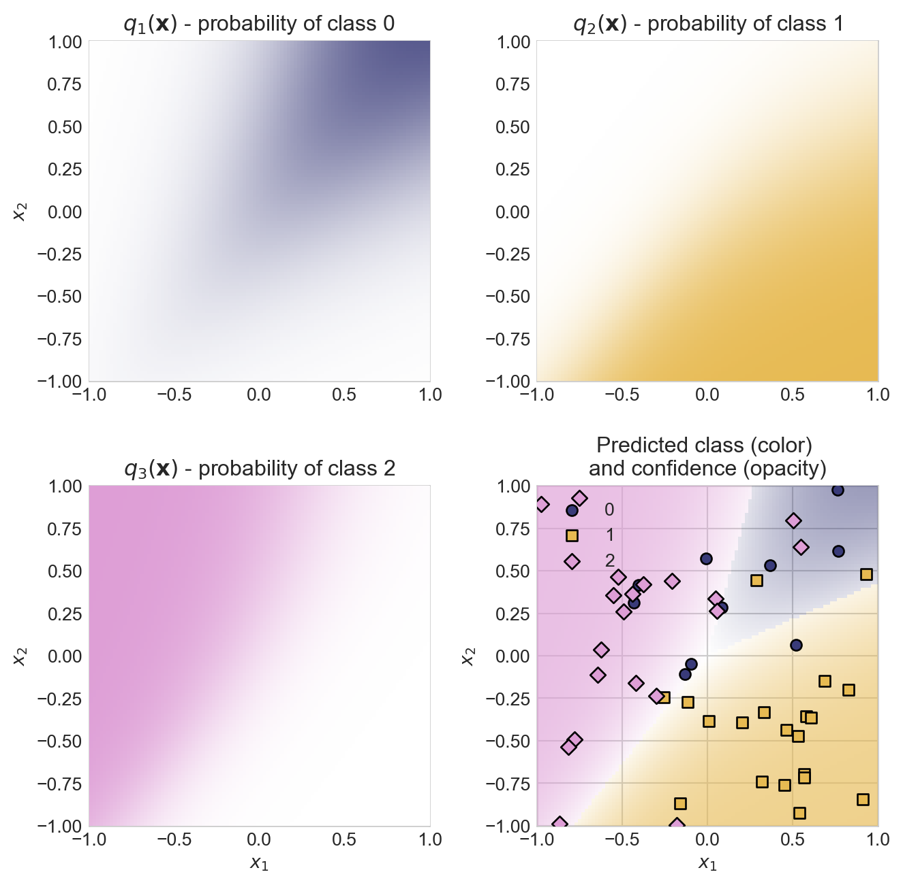
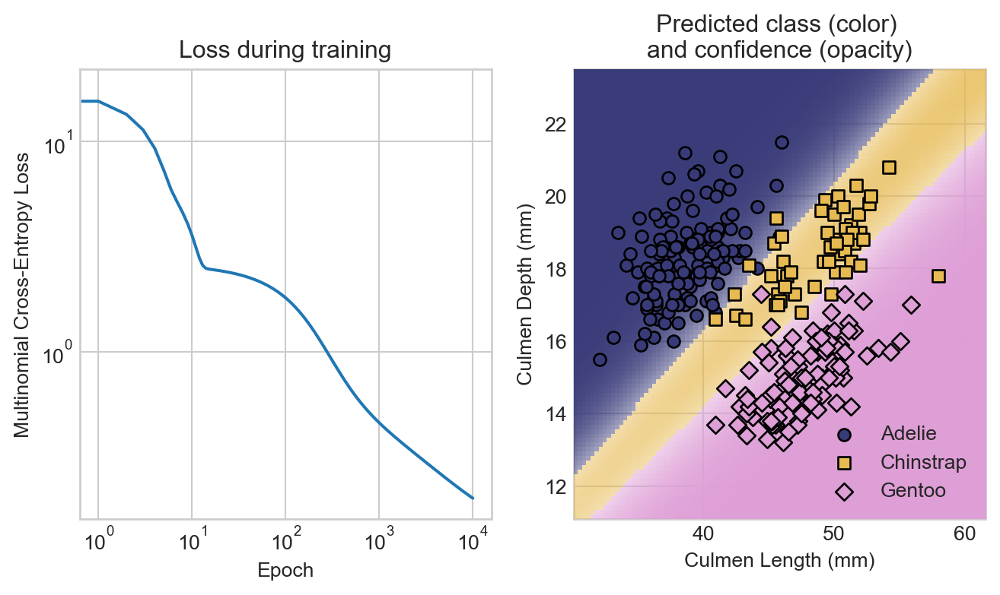
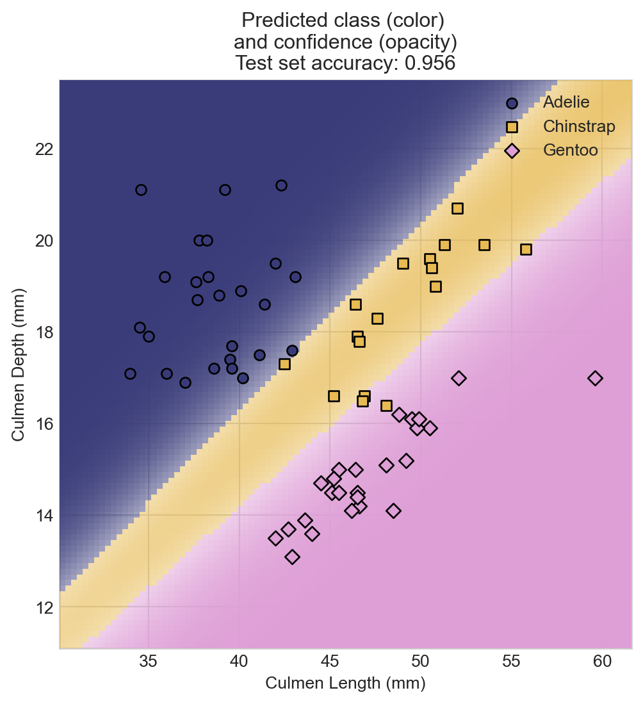

import pandas as pd
import torch
from matplotlib import pyplot as plt
import seaborn as sns
url = "https://raw.githubusercontent.com/PhilChodrow/ml-notes/main/data/palmer-penguins/palmer-penguins.csv"
df = pd.read_csv(url)9 Multinomial Classification
Predicting among many categories
Open the live notebook in Google Colab.
Recap
Recently, we developed binary classification (models that learn to predict one of two labels) using the data = signal + noise framework. In this framework, the signal was a function \(q(\mathbf{x})\) which, when evaluated at a feature value \(\mathbf{x}\), gives the probability that a data point with features \(\mathbf{x}\) belongs to class 1. The noise was a Bernoulli random variable that, when sampled, gives us the observed class label for a data point. We trained our model by letting \(q(\mathbf{x}) = \sigma(\mathbf{w}^\top \mathbf{x})\), where \(\sigma\) is the logistic sigmoid function and \(\mathbf{w}\) is a trainable weight vector. Using gradient descent, we were able to maximize the likelihood of the observed data under this model, which we found to be equivalent to minimizing the binary cross-entropy loss.
In this lecture we’ll consider a simple question: how do we extend this framework to the case where we have more than two classes? The fancy vocabulary word for “more than two classes” is multinomial, so we’ll be developing logistic regression for multinomial classification.
Data Prep

Our data set for these notes is Palmer Penguins. This data set contains physiological measurements and species labels for several populations of Adelie, Chinstrap, and Gentoo penguins.
The Palmer Penguins data was originally collected by Gorman, Williams, and Fraser (2014) and was nicely packaged and released for use in the data science community by Horst, Hill, and Gorman (2020). You can find a very concise summary of the main workflow using a similar data set in Vanderplas (2016).
Let’s go ahead and acquire the data.
The df variable holds a pandas.DataFrame object. You can think of a data frame as a table of data with a variety of useful behaviors for data manipulation and visualization.
Let’s take a look:
df.head() # first 5 rows| studyName | Sample Number | Species | Region | Island | Stage | Individual ID | Clutch Completion | Date Egg | Culmen Length (mm) | Culmen Depth (mm) | Flipper Length (mm) | Body Mass (g) | Sex | Delta 15 N (o/oo) | Delta 13 C (o/oo) | Comments | |
|---|---|---|---|---|---|---|---|---|---|---|---|---|---|---|---|---|---|
| 0 | PAL0708 | 1 | Adelie Penguin (Pygoscelis adeliae) | Anvers | Torgersen | Adult, 1 Egg Stage | N1A1 | Yes | 11/11/07 | 39.1 | 18.7 | 181.0 | 3750.0 | MALE | NaN | NaN | Not enough blood for isotopes. |
| 1 | PAL0708 | 2 | Adelie Penguin (Pygoscelis adeliae) | Anvers | Torgersen | Adult, 1 Egg Stage | N1A2 | Yes | 11/11/07 | 39.5 | 17.4 | 186.0 | 3800.0 | FEMALE | 8.94956 | -24.69454 | NaN |
| 2 | PAL0708 | 3 | Adelie Penguin (Pygoscelis adeliae) | Anvers | Torgersen | Adult, 1 Egg Stage | N2A1 | Yes | 11/16/07 | 40.3 | 18.0 | 195.0 | 3250.0 | FEMALE | 8.36821 | -25.33302 | NaN |
| 3 | PAL0708 | 4 | Adelie Penguin (Pygoscelis adeliae) | Anvers | Torgersen | Adult, 1 Egg Stage | N2A2 | Yes | 11/16/07 | NaN | NaN | NaN | NaN | NaN | NaN | NaN | Adult not sampled. |
| 4 | PAL0708 | 5 | Adelie Penguin (Pygoscelis adeliae) | Anvers | Torgersen | Adult, 1 Egg Stage | N3A1 | Yes | 11/16/07 | 36.7 | 19.3 | 193.0 | 3450.0 | FEMALE | 8.76651 | -25.32426 | NaN |
Each row of this data frame contains measurements for a single penguin, and the columns contain different features of the data. We’ll use the Species column as our class labels, and the other columns as features for classification. For illustration, we’ll use only two features: Culmen Length (mm) and Culmen Depth (mm). We’ll separate these into a matrix of features \(\mathbf{X}\) and a vector of class labels \(\mathbf{y}\).

Image credit: @allisonhorst
df = df.dropna(subset=['Culmen Length (mm)', 'Culmen Depth (mm)', 'Species'])
df = df[['Culmen Length (mm)', 'Culmen Depth (mm)', 'Species']]
df["Species"] = df["Species"].str.split().str[0] # shorten species names to first letter
# features and targets
X = df[['Culmen Length (mm)', 'Culmen Depth (mm)']].values
labels = df['Species'].astype('category')A look at the species labels in feature space suggests that we should be able to do a pretty good job of classifying the species based on these two features. We’ll define a convenience function for visualizing the data points in feature space, colored by species.
def scatter_points(X, labels, cmap, ax):
if isinstance(labels, torch.Tensor):
y = labels
unique_labels = torch.unique(y.detach())
else:
y = labels.cat.codes.values
unique_labels = labels.cat.categories
for i, label in enumerate(unique_labels):
color = cmap(i)
marker = ['o', 's', 'D'][i]
ax.scatter(X[y == i, 0],
X[y == i, 1],
color=color,
edgecolor='k',
marker=marker,
label=f"{unique_labels[i]}",
zorder = 1e3)
ax.set(xlabel=r"$x_1$", ylabel=r"$x_2$")
ax.legend().set_zorder(1e7)Now let’s visualize our penguins:
Code
fig, ax = plt.subplots(figsize=(6, 6))
cmap = plt.get_cmap('tab20b', 3)
scatter_points(X, labels, cmap, ax)
ax.set_title("Scatterplot of penguin species in feature space")
ax.set_xlabel("Culmen Length (mm)")
t = ax.set_ylabel("Culmen Depth (mm)")
Now that we have data, we need to extend our logistic regression framework to the multinomial setting.
Implementing Multinomial Logistic Regression
One-Hot Encoding
To apply our classification framework to our data, we need to convert the categorical species labels into numerical values. A particularly convenient way to do this is via one-hot encoding.
Definition 9.1 (One-Hot Encoding) If \(y\) is a categorical variable with \(K\) categories, then the one-hot encoding of \(\mathbf{y}\) of \(y\) is a vector \(\mathbf{y}\in \{0, 1\}^K\) with entries
\[ y_i = \begin{cases} 1 & \text{if } y \text{ is in category } i \\ 0 & \text{otherwise} \end{cases}\;. \]
For example, in our case with class labels “Adelie”, “Chinstrap”, and “Gentoo”, a one-hot encoding of a penguin of species “Adelie” would be the vector \(\mathbf{y}= (1, 0, 0)\), a penguin of species “Chinstrap” would be \(\mathbf{y}= (0, 1, 0)\), and a penguin of species “Gentoo” would be \(\mathbf{y}= (0, 0, 1)\).
The pandas library provides a convenient way to perform one-hot encoding for data frames via the pd.get_dummies function.
df = pd.get_dummies(df, columns=['Species'])
df.head()| Culmen Length (mm) | Culmen Depth (mm) | Species_Adelie | Species_Chinstrap | Species_Gentoo | |
|---|---|---|---|---|---|
| 0 | 39.1 | 18.7 | True | False | False |
| 1 | 39.5 | 17.4 | True | False | False |
| 2 | 40.3 | 18.0 | True | False | False |
| 4 | 36.7 | 19.3 | True | False | False |
| 5 | 39.3 | 20.6 | True | False | False |
Now we’re ready to split our data into features and targets and to training and test sets.
train_ix = df.sample(frac=0.8, random_state=42).index
test_ix = df.drop(train_ix).index
feature_cols = ['Culmen Length (mm)', 'Culmen Depth (mm)']
target_cols = ['Species_Adelie', 'Species_Chinstrap', 'Species_Gentoo']
X_train = torch.tensor(df.loc[train_ix, feature_cols].values, dtype=torch.float32)
y_train = torch.tensor(df.loc[train_ix, target_cols].values, dtype=torch.float32)
X_test = torch.tensor(df.loc[test_ix, feature_cols].values, dtype=torch.float32)
y_test = torch.tensor(df.loc[test_ix, target_cols].values, dtype=torch.float32)Data Model
Let’s go ahead and write down a model of the data generating process for the multinomial classification problem. We’re going to follow a similar approach as we did in binary classification. Suppose that each data point can be in one of \(K\) classes, and suppose that we have a signal function \(\mathbf{q}: \mathbb{R}^d \rightarrow (0, 1)^K\) that takes in features \(\mathbf{x}_i\) and outputs a vector of probabilities \(\mathbf{q}(\mathbf{x}_i)\) for each class. To generate a class label for data point \(i\), we draw from a categorical distribution with class probabilities given by \(\mathbf{q}(\mathbf{x}_i)\). So, the likelihood of a single data point \(i\) with features \(\mathbf{x}_i\) and one-hot encoded class label \(\mathbf{y}_i\) is then
\[ \begin{aligned} p(\mathbf{y}_i, \mathbf{x}_i; \mathbf{q}) = \begin{cases} q_1(\mathbf{x}_i) & \text{if } y_{i1} = 1 \\ q_2(\mathbf{x}_i) & \text{if } y_{i2} = 1 \\ \vdots \\ q_K(\mathbf{x}_i) & \text{if } y_{iK} = 1\;. \end{cases} \end{aligned} \]
It’s convenient to write this expression in the more compact form \[ p(\mathbf{y}_i , \mathbf{x}_i; \mathbf{q}) = \prod_{k=1}^K q_k(\mathbf{x}_i)^{y_{ik}}\;. \]
We can take the product over all data points to get the likelihood of the full data set. Let \(\mathbf{Y}\) be the \(n \times K\) matrix of one-hot encoded class labels, with \(i\)th row \(\mathbf{y}_i\) corresponding to the one-hot encoding of the class label for data point \(i\):
\[ \mathbf{Y}= \begin{bmatrix} - & \mathbf{y}_1^\top & - \\ - & \mathbf{y}_2^\top & - \\ &\vdots \\ - & \mathbf{y}_n^\top & - \end{bmatrix}\;, \]
Then, the likelihood of the data set under the model is
\[ p(\mathbf{Y}, \mathbf{X}; \mathbf{q}) = \prod_{i=1}^n \prod_{k=1}^K q_k(\mathbf{x}_i)^{y_{ik}}\;. \]
Taking logs gives us the log-likelihood:
\[ \begin{aligned} \mathcal{L}(\mathbf{Y}, \mathbf{X}; \mathbf{q}) = \sum_{i = 1}^n \sum_{k = 1}^K y_{ik} \log q_k(\mathbf{x}_i)\;. \end{aligned} \tag{9.1}\]
Equation 9.1 is the generalization of the binary cross-entropy to the case of multiple classes.
Signal Function for Logistic Regression
To complete our specification for logistic regression, we need to specify the functional form of the signal function \(\mathbf{q}\). We’ll use the softmax function, which takes in a vector of real-valued scores and outputs a vector of probabilities.
Definition 9.2 (Softmax Function) The softmax function \(\boldsymbol{\sigma}: \mathbb{R}^K \rightarrow (0, 1)^K\) is defined as
\[ \boldsymbol{\sigma}(\mathbf{s}) = \frac{1}{\sum_{j = 1}^K e^{s_j}} \begin{pmatrix} e^{s_1} \\ e^{s_2} \\ \vdots \\ e^{s_K} \end{pmatrix}\;, \]
for \(k = 1, \ldots, K\). The \(k\)th entry of \(\boldsymbol{\sigma}(\mathbf{s})\) is given by
\[ \boldsymbol{\sigma}(\mathbf{s})_k = \frac{e^{s_k}}{\sum_{j = 1}^K e^{s_j}}\;. \]
Here’s an example of the softmax function in action:
def softmax(s):
exp_s = torch.exp(s)
return exp_s / torch.sum(exp_s)
s = torch.tensor([1.0, 2.0, 3.0])
print(softmax(s))tensor([0.0900, 0.2447, 0.6652])The largest values of \(\mathbf{s}\) correspond to the largest probabilities in \(\boldsymbol{\sigma}(\mathbf{s})\); the entries of \(\boldsymbol{\sigma}(\mathbf{s})\) are nonnegative, and sum to one, giving a valid probability vector.
In order to use the softmax function as our signal function \(q\), we need to specify how to get scores \(\mathbf{s}\in \mathbb{R}^K\) from our features \(\mathbf{x}\in \mathbb{R}^d\). The simplest way to do this is to use a linear function of the features. To do this, we’ll introduce a \(d \times K\) matrix of trainable parameters \(\mathbf{W}\), and we’ll compute scores as \(\mathbf{s}= \mathbf{x}^\top \mathbf{W}\). Our signal function will then be given by
\[ \begin{aligned} \mathbf{q}(\mathbf{x}) = \boldsymbol{\sigma}(\mathbf{x}^\top \mathbf{W})\;. \end{aligned} \]
Here, the trainable parameters are contained in the matrix \(\mathbf{W}\). Intuitively, we can think of \(w_{jk}\) as the contribution of feature \(j\) to the score for class \(k\). If \(w_{jk}\) is large and positive, then larger values of feature \(j\) make it more likely that the data point is in class \(k\). If \(w_{jk}\) is large and negative, then larger values of feature \(j\) make it less likely that the data point is in class \(k\).
Vectorized Computation
Rather than compute the score vector \(\mathbf{s}_i\) for each data point \(i\) separately, we can compute the scores for all data points at once using matrix multiplication. Let \(\mathbf{X}\) be the \(n \times d\) matrix of features, with \(i\)th row \(\mathbf{x}_i^\top\) corresponding to the features for data point \(i\). Then, we can compute the score matrix \(\mathbf{S}\in \mathbb{R}^{n \times K}\) containing all the scores as
\[ \begin{aligned} \mathbf{S}= \begin{bmatrix} - & \mathbf{s}_1 & - \\ - & \mathbf{s}_2 & - \\ &\vdots \\ - & \mathbf{s}_n & - \end{bmatrix} = \begin{bmatrix} - & \mathbf{x}_1^\top \mathbf{W}& - \\ - & \mathbf{x}_2^\top \mathbf{W}& - \\ &\vdots \\ - & \mathbf{x}_n^\top \mathbf{W}& - \end{bmatrix} = \begin{bmatrix} - & \mathbf{x}_1^\top & - \\ - & \mathbf{x}_2^\top & - \\ &\vdots \\ - & \mathbf{x}_n^\top & - \end{bmatrix} \mathbf{W}= \mathbf{X}\mathbf{W}\; \end{aligned} \]
To then compute the signals \(\mathbf{q}(\mathbf{s}_i)\), we need to apply the softmax function to each row of the score matrix \(\mathbf{S}\):
def softmax_rows(S):
# equivalent to torch.softmax(S, dim=1)
exp_S = torch.exp(S)
return exp_S / torch.sum(exp_S, dim=1, keepdim=True)Torch Implementation
We now have everything we need to illustrate the data generation process and perform inference. Our implementation of logistic regression requires only initializing the weight matrix \(\mathbf{W}\) and defining a forward method that takes in features \(\mathbf{X}\) and outputs the signal function \(\mathbf{q}(\mathbf{X})\):
class LogisticRegression:
def __init__(self, d_features, k_classes):
self.W = torch.randn(d_features, k_classes, requires_grad=True)
def forward(self, X):
S = X @ self.W
return softmax_rows(S)First, let’s visualize the data generating process using a random weight matrix \(\mathbf{W}\). We’ll compute the signal \(\mathbf{q}(\mathbf{x})\) for a grid of points in feature space, and we’ll visualize the predicted class probabilities for each class.
The large code block below visualizes the three entries of the function \(\mathbf{q}\) for a logistic regression model with a random weight matrix, and illustrates how randomly sampled data gets classes assigned from these entries.
Code
# set the random number generator for reproducibility
torch.random.manual_seed(1234)
# initialize colors
cmap = plt.get_cmap('tab20b', 3)
# create a grid of points in feature space and flatten it into a list of points
# for prediction
x_grid = torch.linspace(-1, 1, 100)
y_grid = torch.linspace(-1, 1, 100)
X_grid, Y_grid = torch.meshgrid(x_grid, y_grid, indexing='xy')
grid = torch.stack([X_grid.flatten(), Y_grid.flatten()], dim=1)
# initialize model with random weights
model = LogisticRegression(d_features=2, k_classes=3)
model.W = model.W * 4.0
# compute predicted class probabilities for each point in the grid
Q = model.forward(grid)
preds = Q.argmax(dim=1)
# compute opacity as the difference between the max probability and uniform probability, for visualization purposes
opacities = Q.max(dim=1).values - 1/3
# colors for each data point determined by the predicted class, with opacity determined by confidence
colors = cmap(preds)
colors[:, -1] = opacities.detach().numpy()
# compute predicted class for a random set of points in feature space
X_points = 2*torch.rand(50, 2) - 1
Q_points = model.forward(X_points)
point_class = torch.multinomial(Q_points, num_samples=1).squeeze()
# construct the visualization
fig, axarr = plt.subplots(2, 2, figsize=(7, 7))
for k in range(3):
# color for the chosen class
color = cmap(k)
# colormap for individual panel
class_cmap_grad = plt.cm.colors.LinearSegmentedColormap.from_list('white_to_color', ['white', color])
# plot the predicted class probabilities for class k
axarr.ravel()[k].imshow(Q[:, k].reshape(100, 100).detach(), extent=(x_grid.min(), x_grid.max(), y_grid.min(), y_grid.max()), origin='lower', cmap=class_cmap_grad, vmin=0, vmax=1, zorder = 100)
axarr.ravel()[k].set_title(fr"$q_{k+1}(\mathbf{{x}})$ - probability of class {k}")
# labels
if k == 2:
axarr.ravel()[k].set(xlabel=r"$x_1$", ylabel=r"$x_2$")
if k == 0:
axarr.ravel()[k].set(ylabel=r"$x_2$")
# plot all the predicted class probabilities together, with opacity determined by confidence
axarr.ravel()[3].imshow(colors.reshape(100, 100, 4), extent=(x_grid.min(), x_grid.max(), y_grid.min(), y_grid.max()), origin='lower', zorder = 100)
# for k in range(3):
# color = cmap(k)
# marker = ['o', 's', 'D'][k]
# axarr.ravel()[3].scatter(X_points[point_class == k, 1], X_points[point_class == k, 0], color=color, edgecolor='k', marker=marker, zorder = 200, label=f"Class {k+1}")
scatter_points(X_points, point_class, cmap, axarr.ravel()[3])
# scatter_points(X_points, point_class, cmap, axarr.ravel()[3])
axarr.ravel()[3].set_title("Predicted class (color) \nand confidence (opacity)")
axarr.ravel()[3].set(xlabel=r"$x_1$")
plt.tight_layout()
Model Training
Now it’s time to train a model. Our approach is again gradient descent. The addition of multiple classes, reflected in the weight matrix \(\mathbf{W}\in \mathbb{R}^{d \times k}\) (rather than a weight vector \(\mathbf{w}\in \mathbb{R}^d\) as in binary classification), doesn’t really change the training procedure but it does make it awkward to compute gradients by hand. We’ll rely on PyTorch’s automatic differentiation to compute the gradients for us. In order to compute the gradients, we first need to implement the cross-entropy loss function from equation {eq-log-likelihood-multinomial}:
def cross_entropy_loss(q, Y):
return -torch.sum(Y * torch.log(q)) / Y.shape[0]model = LogisticRegression(d_features=2, k_classes=3)
losses = []
for epoch in range(10000):
# compute predicted class probabilities
q = model.forward(X_train)
# compute loss
loss = cross_entropy_loss(q, y_train)
losses.append(loss.item())
# compute gradients
loss.backward()
# update weights using gradient descent
with torch.no_grad():
model.W -= 0.001 * model.W.grad
model.W.grad.zero_()Code
fig, axarr = plt.subplots(1, 2, figsize=(8, 4))
x_grid = torch.linspace(df['Culmen Length (mm)'].min()-2, df['Culmen Length (mm)'].max()+2, 100)
y_grid = torch.linspace(df['Culmen Depth (mm)'].min()-2, df['Culmen Depth (mm)'].max()+2, 100)
X_grid, Y_grid = torch.meshgrid(x_grid, y_grid)
grid = torch.stack([X_grid.flatten(), Y_grid.flatten()], dim=1)
Q = model.forward(grid)
preds = Q.argmax(dim=1)
colors = cmap(preds)
colors[:, -1] = Q.max(dim=1).values.detach().numpy()
axarr[0].plot(losses)
axarr[0].set_title("Loss during training")
axarr[0].set_xlabel("Epoch")
axarr[0].set_ylabel("Multinomial Cross-Entropy Loss")
axarr[0].loglog()
axarr[1].imshow(colors.reshape(100, 100, 4).transpose(1, 0, 2), extent=(x_grid.min(), x_grid.max(), y_grid.min(), y_grid.max()), origin='lower', zorder = 100, aspect='auto')
# sns.scatterplot(data=df, x='Culmen Length (mm)', y='Culmen Depth (mm)', hue='Species', style='Species', edgecolor='k', alpha=0.7, zorder = 200)
axarr[1].set_title("Predicted class (color) \nand confidence (opacity)")
y_train_labels = y_train.argmax(dim=1)
penguin_names = ['Adelie', 'Chinstrap', 'Gentoo']
y_train_labels_named = [penguin_names[i] for i in y_train_labels.numpy()]
y_train_labels_named = pd.Series(y_train_labels_named, dtype='category')
scatter_points(X_train, y_train_labels_named, cmap, axarr[1])
axarr[1].set_xlabel("Culmen Length (mm)")
t = axarr[1].set_ylabel("Culmen Depth (mm)")
Let’s finally evaluate the performance of our model on the test set.
- 1
- Compute the score matrix \(\mathbf{S}\) on the test set.
- 2
- Compute the predicted class labels as the largest score in each row of \(\mathbf{S}\).
- 3
- Compute the true class labels by taking the argmax of the one-hot encoded labels.
- 4
- Compute the accuracy as the fraction of correctly classified data points.
Code
fig, ax = plt.subplots(figsize=(6, 6))
ax.imshow(colors.reshape(100, 100, 4).transpose(1, 0, 2), extent=(x_grid.min(), x_grid.max(), y_grid.min(), y_grid.max()), origin='lower', zorder = 100, aspect='auto')
y_test_labels = y_test.argmax(dim=1)
penguin_names = ['Adelie', 'Chinstrap', 'Gentoo']
y_test_labels_named = [penguin_names[i] for i in y_test_labels.numpy()]
y_test_labels_named = pd.Series(y_test_labels_named, dtype='category')
scatter_points(X_test, y_test_labels_named, cmap, ax)
ax.set_title(f"Predicted class (color) \nand confidence (opacity)\nTest set accuracy: {acc:.3f}")
ax.set_xlabel("Culmen Length (mm)")
t = ax.set_ylabel("Culmen Depth (mm)")
As in the case of binary classification, it may be useful to construct confusion matrices or other measures of error by class when assessing overall model performance.
References
Gorman, Kristen B., Tony D. Williams, and William R. Fraser. 2014. “Ecological Sexual Dimorphism and Environmental Variability Within a Community of Antarctic Penguins (Genus Pygoscelis).” Edited by André Chiaradia. PLoS ONE 9 (3): e90081. https://doi.org/10.1371/journal.pone.0090081.
Horst, Allison M, Alison Presmanes Hill, and Kristen B Gorman. 2020. “Allisonhorst/Palmerpenguins: V0.1.0.” Zenodo. https://doi.org/10.5281/ZENODO.3960218.
Vanderplas, Jacob T. 2016. Python Data Science Handbook: Essential Tools for Working with Data. First edition. Sebastopol, CA: O’Reilly Media, Inc.
© Phil Chodrow, 2025